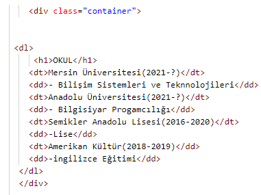
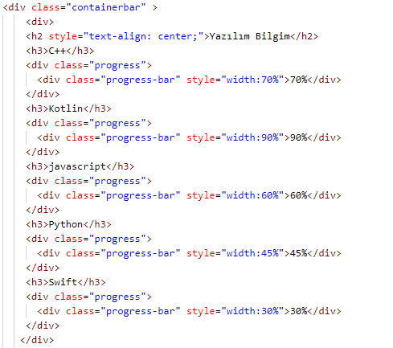

Bu sayfada containter ve containter bar kullaranarak ufak bir cv hazırladım. Containter ile okullarımı,sertifikalarımı ve işlerimi oluşturdum.Container bar ile de hangi dillerde ne kadar yetenekleri olduğumu belirttim.
Container ve liste kullanaramı.
ContainerBar kullanımı.
